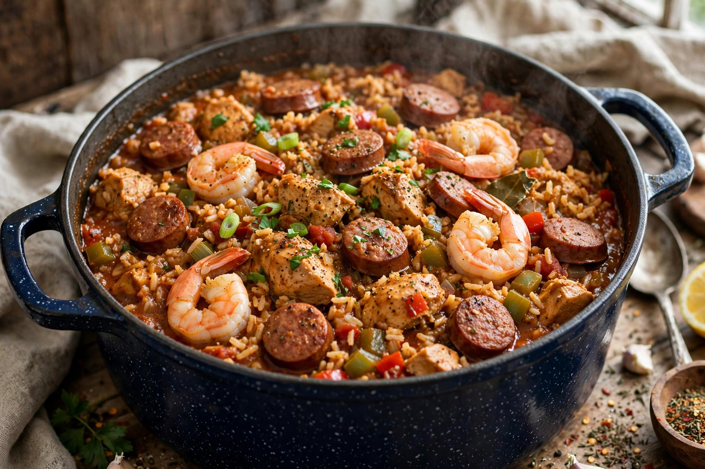

From Wikipedia, the free encyclopedia
| Jambalaya | |
|---|---|
 | |
| Type | Rice dish |
| Place of origin | Louisiana, United States |
| Main ingredients | Rice, meat (chicken, sausage, pork), seafood, holy trinity vegetables |
Jambalaya is a Louisiana Creole and Cajun rice dish of West African, Spanish, and French influence, consisting mainly of meat and vegetables mixed with rice. The meat typically includes chicken, andouille sausage, pork, and sometimes seafood such as shrimp or crawfish, combined with the "holy trinity" of onion, celery, and bell pepper.
Creole jambalaya, associated with New Orleans, includes tomatoes and has a reddish colour; Cajun jambalaya, from the rural southwest of the state, omits tomatoes and takes a brown colour from browning the meat. The dish descends in part from Spanish paella adapted to Louisiana ingredients, with strong parallels to West African jollof rice. Gonzales, Louisiana, calls itself the "Jambalaya Capital of the World" and hosts an annual festival.
Meat and vegetables are cooked first, then rice and stock are added and the pot simmers until the rice absorbs the liquid, producing a dish drier than gumbo, to which it is often compared. Hank Williams's 1952 hit song "Jambalaya (On the Bayou)" carried the dish's name across America.
Gumbo · Paella · Jollof rice